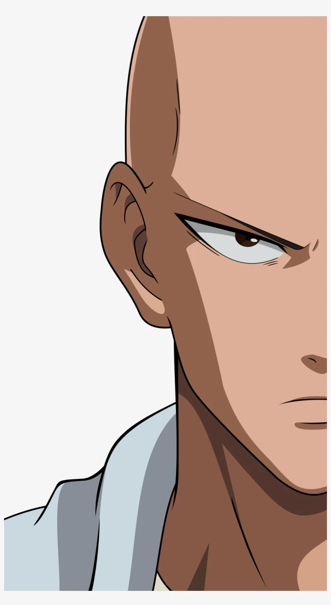
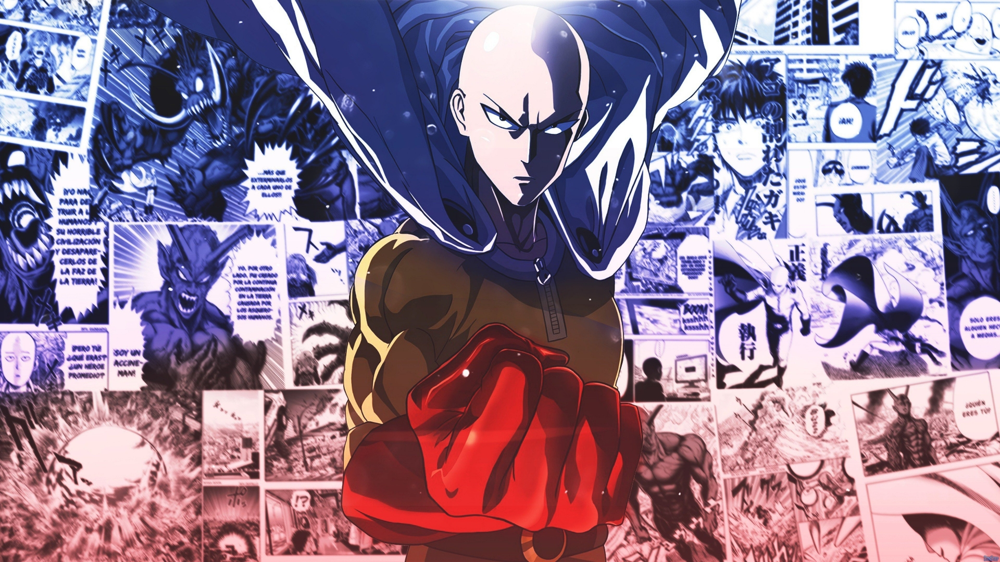
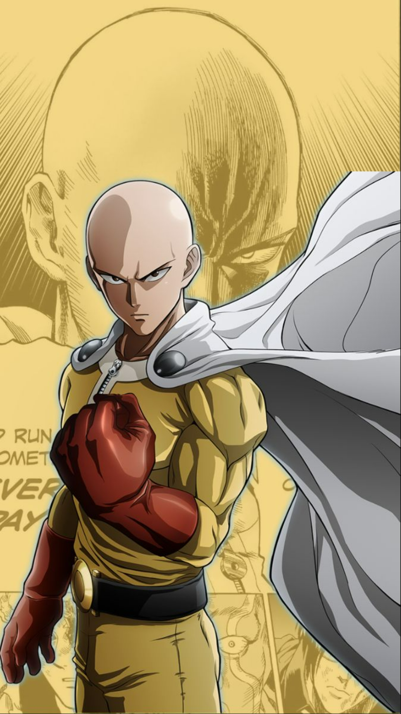
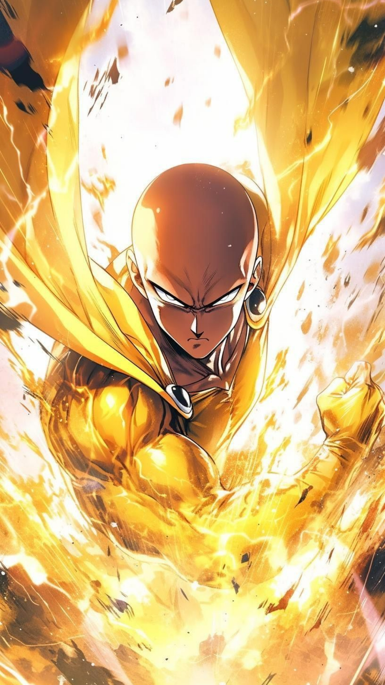

|  | Saitama is a self-proclaimed superhero who can defeat every opponent that he encounters with a single punch. He searches for a worthy opponent after growing bored by a lack of challenge in a world filled with superheroes and villains. While fighting evil, he meets his student, Genos. |
|---|
Saitama is an ordinary-looking bald man with brown eyes, a thin but well-built physique, and is of average height and weight. He used to have a full head of short black hair but lost it due to the intensity of his hero training regimen. Saitama is usually deliberately drawn in a more simplistic style than the other characters, similar to the style of the original webcomic, with an elliptical head and simple facial features. When drawn in a more serious style, Saitama is revealed to have sharp facial features, fearsome eyes, and chiseled musculature. His posture changes as well, with a slack posture and sloping shoulders when lax, and a straightened posture and squared shoulders when serious. |
 |
|---|
|  |
|
|---|
Saitama's character on the upper surface can be best summed up as "average". At first glance, nothing about him strikes anyone he meets or causes them to note anything remarkable about him. Before becoming a hero, he was an average salaryman and did not seem interested in anything initially, though becoming a hero has always been a dream of Saitama's.[27] Before becoming one, he used to be frustrated about society, just like Hammerhead and even commenting that he could have become just like them depending on the path he took.[28] Due to his great power and being virtually indestructible, Saitama is an indifferent person. Even the mightiest foes pose no challenge to him, so he does not take his hero work seriously, goes through everything with little to no effort, and yearns for an opponent that can provide him with a challenge.[29] The lack of worthy opponents has led him to suffer from a self-imposed existential crisis,[7] and he claims that his ability to feel any emotions has dulled considerably.[30] The combination of his attitude, unstoppable power, and "unimpressive" appearance often causes his battles to become anticlimactic. Saitama will usually allow his opponents to rant about their motives and power up into their strongest forms, before obliterating them with a single punch. |
 |
|---|
“ If the heroes run and hide, who will stay and fight? ” — Saitama to Genos
| “ I became so powerful, no one can beat me. ” — Saitama on his strength Saitama is the titular One-Punch Man and the strongest character in the series. So far, no enemy has been able to injure him in any way, and almost no enemy has been able to survive a single earnest punch from him. A few enemies have survived punches from him, such as any human he has struck (whom he restrains himself against) and Boros, whom Saitama empathized with and held back against so as to give himself and Boros a satisfying and stimulating fight. His strength is so great that it vastly eclipses even artificial beings designed or bred specifically for superhuman combat, such as mechanical beings or the mutated warriors from the House of Evolution. Since no enemies have posed any real challenge to Saitama yet, the upper bound of his strength is likely even higher than it currently appears. The only opponent (so far) who has actually made him put visible effort into defeating was Garou, whose powers and abilities were enhanced by "God", and that's mostly due to the former's ability to copy Saitama's strength so as to fight him as an equal. While his power is only limited to heightened human traits (he cannot fly or fire energy blasts), his superhuman abilities are more than enough to compensate for the lack of variety in his powers. The origin of Saitama's immense strength is mysterious and unclear. Although he tells everyone he got his incredible power through mere physical training, no one believes him at all.[63] According to Saitama, after a year and a half of 100 daily push-ups, sit-ups, and squats, plus 10 km daily running, he had achieved some level of superhuman strength.[63] This training was apparently so intense for Saitama that he at times felt he might die, and claims that it is what caused all of his hair to suddenly and eventually fall out.[63] Genos believes that Saitama himself does not actually know or understand how he gained his power, and hopes to learn the secret by sparring with and observing him,[64] while Dr. Genus believes that Saitama worked out with said training regimen so hard that he had removed his limiter.[65] It should be noted that Saitama would complete all parts of the training one after the other without breaks and was battling monsters that appeared during that time, which would have made completing the training more intense than it would normally be expected. |
|---|
Unparalleled Strength: Saitama possesses seemingly limitless physical strength and is capable of effortlessly defeating powerful monsters and villains with a single, casual punch (although this strength is not limited to punches). His punches are so powerful that many monsters simply explode when struck. An example of this casual yet overwhelming offensive power occurs when Saitama launches himself from the top of a building, blasts right through a giant meteor with a punch, lands safely, and calmly decides to go home.[69] Another instance is when Sonic tries to attack Saitama with a sword; he stops the sword by catching it with his teeth, effortlessly shattering the blade with the power of his jaw.[70] When launched from Earth to the moon by Boros, he used his jumping power to return to Earth in mere moments, causing a huge shockwave and leaving a massive crater on the surface of the moon upon departure.[71] A "normal" punch from him was shown to be highly destructive, even to someone as durable as Boros.[72] A "serious" punch from him was able to counter the latter's strongest attack, Collapsing Star Roaring Cannon, an attack capable of destroying the planet or its surface. Not only did Saitama completely negate Boros' final attack using his serious punch, but the shockwave from the punch was also powerful enough to part clouds on a global scale.[73] When fighting Orochi, the high-speed pressure of the lava fired from his hands was enough to overpower and completely disperse Orochi's Gaia Cannon, an incredibly powerful attack that drew energy from the Earth's core and caused worldwide earthquakes.[74] Additionally, he is capable of destroying the Earth if he wanted to,[75] and has threatened to do so when irritated.[76] His strength has been stated by numerous characters to defy reason.